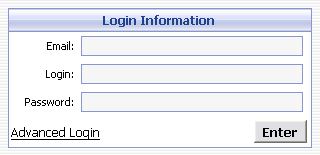
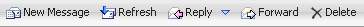
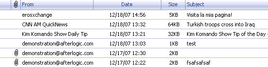
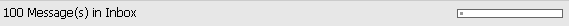
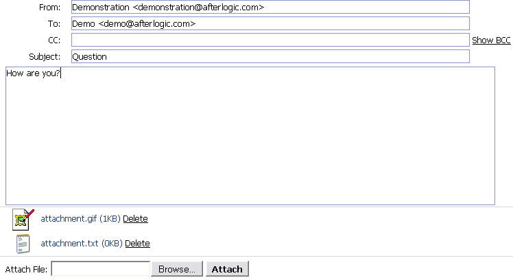

Inner styles:
| Class name | Description |
| wm_inbox_page_switcher_pages | All pages. |
| wm_inbox_page_switcher_pages font | Current page. |
How to create my own skin
* all illustrations are for "iForum" WebMail skin of Pro version.
To create or modify WebMail skin, create new or modify existing style-sheet file "styles.css".
How skins are stored in WebMail:
wm-login
Login panel, where a user should enter parameters of his account (fig.1)

Inner styles:
Class name Description wm_input Input field of the login panel, where a user enters his account info wm_title Input fields titles of the dialog login panel. wm_login_header Dialog window caption appearance.
wm_accountslist
Main header at the top of the WebMail screen where email account information and "Logout" link is displayed.
Inner styles:
Class name Description wm_accountslist_email
wm_accountslist_logoutItems in accounts list
wm_toolbar
Top toolbar of WebMail which contains toolbar icons.

Inner styles:
Class name Description wm_toolbar_item Toolbar item with functional buttons appearance. wm_toolbar_item_over Toolbar item with functional buttons appearance when user moves cursor over the item. wm_toolbar_item_press The style of "Move to folder" button when pressed. wm_tb_press The style of "Mark as read" and "Reply" buttons when pressed. wm_popup_menu Drop-down menu of toolbar wm_menu_item Items in drop-down menu of toolbar. wm_menu_item_over Items when targeted in drop-down menu of toolbar.
wm_inbox_page_switcher
Page switcher.
Inner styles:
Class name Description wm_inbox_page_switcher_pages All pages. wm_inbox_page_switcher_pages font Current page.
wm_mail_container
Container for messages list and message preview pane.
wm_inbox
Main list box where messages are displayed.

Inner styles:
Class name Description wm_inbox_headers Message list header. wm_inbox_headers_separate Stripes which delimit headers items from each other. wm_inbox_item Messages in the message list. wm_inbox_item_select Messages in the message list which are selected.
wm_lowtoolbar
Lower toolbar of system displayed under messages list.

Inner styles:
Class name Description .wm_lowtoolbar_space_info .wm_progressbar A part of progress-bar which graphically indicates size of a mail box. .wm_lowtoolbar_space_info .wm_progressbar_used A part of progress-bar which indicates used space of a mail box.
wm_message_container
Email message layout displayed in View Message and Preview Pane mode.
Inner styles:
Class name Description wm_view_message Message header field captions appearance such as "From", "To", "Subject" etc. in "view message" mode. wm_attachments_cell List of attachments in "view message" mode/ wm_message_cell Message body in "view message" mode. wm_message_headers Message header field captions appearance such as "From", "To", "Subject" etc. in "preview pane" mode. wm_message_attachments List of attachments in "preview pane" mode. wm_message Message body in "preview pane" mode. wm_message_body_quotation Quoted strings appearance in message body. wm_message_rfc822 Appearance of message rfc822 headers.
wm_new_message
The form of a new message creation.Create "menu" folder in your own skin directory where functional button icons should exist. Name of icon files must be exactly as follows:

Inner styles:
Class name Description wm_attachment The list of attachments.
Icon file name Description attachment.gif File attached. refresh.gif Refresh message list. delete.gif Message deleting. forward.gif Forward message message_down.gif Jump to next message in mailbox message_down_inactive.gif Inactive icon appearance when current message is last one in mailbox. message_up.gif Jump to previous message in mailbox. message_up_inactive.gif Inactive icon appearance when current message listed is the first in mailbox. new_message.gif Create a new message. popup_menu_arrow.gif Drop-down menu indicator in the toolbar. print.gif Print Message priority_high.gif High Priority. priority_low.gif Low Priority. priority_normal.gif Normal Priority. reply.gif Reply to the Message. replyall.gif Reply to all. save.gif Save Message. send.gif Send Message icon.
If you have any questions don't hesitate to email to support@afterlogic.com
Or visit our support web page at http://www.afterlogic.com/support
or web forum at http://www.afterlogic.com/forum